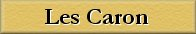

|

Site consacré à la vie et à la famille de Marie-Anna Caron et de Rosario
Charette. Site créé le 27 août 2002.
Dans ce site vous retrouvez aussi trois
familles-souches et nos liens avec elles:
ROBERT
CARON, son histoire, celle de son
fils Joseph, et sa lignée jusqu'à nous.
ROBERT
GAGNON, son histoire, celle de son
fils Jean, et sa lignée jusqu'à nous.
ANTOINE
DIONNE, son histoire, celle de
son fils Jean et de son petit-fils Augustin, et sa lignée jusqu'à
nous.
SEPTEMBRE
2006. Mise à jour complète du site,
ajout d'informations et de photos, resserrement de la navigation et de
la mise en page.
|
|
Le Québec a
une belle histoire.
Vous en doutez? Vos souvenirs scolaires sont ceux de colons, d'habitants (deux
mots devenus péjoratifs), vous
avez un sentiment de "loosers" en pensant à la
conquête, aux Patriotes, aux référendums,...?
Et pourtant, quand on
regarde cette histoire du Québec par l'autre bout de la
lorgnette, avec plus de recul, on la trouve belle. Il
faut souvent que quelqu'un venu de l'extérieur nous le dise pour
que nous en prenions conscience. Dans un délai de cinq
ans j'ai suivi deux formations différentes sur
le vécu des immigrants et leur perception des
Québécois. Les deux formatrices étaient des immigrantes
installées au Québec depuis plusieurs années et qui, pour mieux
comprendre leur pays d'adoption, avaient étudié notre histoire (il
y a cinq ans c'était une cubaine et, récemment, une
mexicaine) .
Leur témoignage est identique:
"Vous avez une belle
histoire, émouvante, une histoire de ténacité et de survivance
d'un jeune peuple. Basée sur des racines
françaises, donc européennes et latines, puis
ensuite teintée d'influences britanniques et américaines, votre
histoire a fait
de vous quelque chose d'unique. Son étude m'a fait aimé le
Québec et les Québécois encore plus."
Oublions la propagande
catholique et nationaliste à tout crin de nos vieux livres
d'histoire. Voyons les faits avec notre gros bon sens. Les premiers ancêtres, ceux du 17ème siècle, ont eu une
volonté et un courage admirables pour choisir de s'établir dans
ce pays pour lequel leur mode de vie n'était pas du tout
adapté. Mais rapidement leur façon de faire et leur
mentalité ont changé. Ils sont devenus différents des
Français qui ne venaient ici que pour mousser leur
carrière. La conquête anglaise de 1759 est une bonne chose
pour les Canadiens, la colonie française étant alors au bord
de la ruine. Évidemment, les Anglais auraient bien voulu
les assimiler, mais, n'étant pas assez nombreux et désirant que les Canadiens soient de leur bord, plutôt que de
celui des américains en pleine révolution pour leur
indépendance, les conquérants anglais ont donc négocié avec
les Canadiens, permettant ainsi à ces derniers de
survivre en tant que peuple distinct.
Depuis lors, les
Canadiens, puis les Canadiens-français, puis les Québécois, et
maintenant les Québécois francophones ont comme caractéristique
leur facilité de négocier, de faire des compromis pour survivre
et se développer. La réalité québécoise change
rapidement, l'histoire est à suivre....
Capsules
d'histoire:
UN
SURVOL DU 17ÈME SIÈCLE, page créée le 28 mars 2004
pour compléter
les sites consacrés à tous nos ancêtres arrivés
au pays aux débuts de la colonie, soit au 17ème siècle.
d'autres capsules à suivre...
|